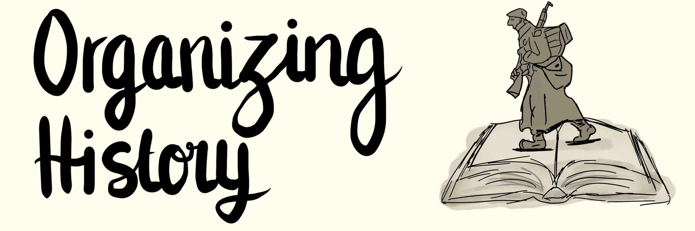
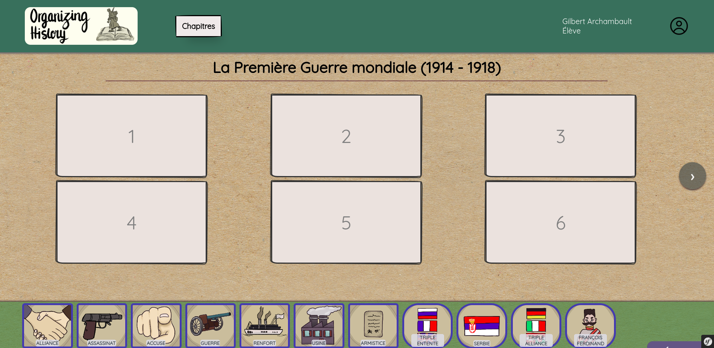
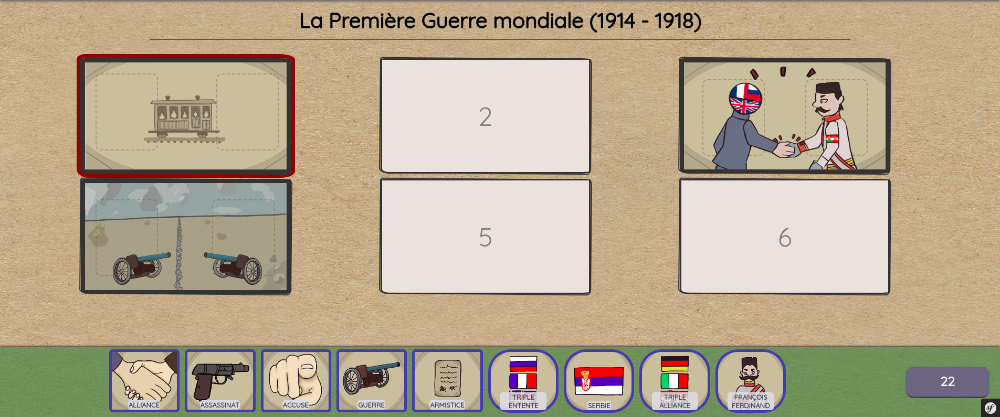

Création d'un jeu vidéo web éducatif sur le programme de 3 ème de cours d'histoires.
Le but du jeu est de retracer un moment historique en remplissant des cases avec des actions et des personnages associés.
-  
Compétences développées
Travail en collaboration
Développement PHP / Symfony
Notions de sécurité et authentification
Respect des normes RGPD
J’ai appris à collaborer au sein d’une équipe et à bien segmenter les tâches afin de gagner du temps.
J’ai beaucoup développé mes compétences en PHP / Symfony car j'ai dû acquérir par moi même toutes les compétences utilisées pour faire ce jeu vidéo. De plus, Symfony était totalement nouveau pour moi.
J'ai appris beaucoup de notions sur l'authentification d'utilisateurs et j'ai mis en place sur le site de l'authentification permettant de s'identifier en tant que professeur ou élève
Notre application a dû être pensée pour respecter les normes RGPD notamment sur la collecte des données de mineurs. Cela nous a obligé à avoir une analyse de l'application et d'adapter ce qu'on codait pour respecter ces normes. Maintenant j'ai une vison bien claire de l'implémentation des normes RGPD dans une application informatique